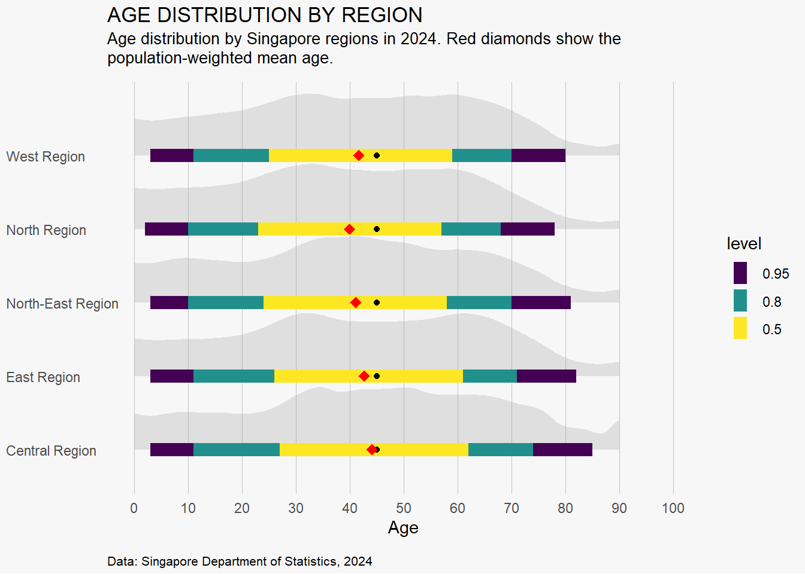

pacman::p_load(tidyverse, ggplot2, ggrepel, patchwork,
ggthemes,dplyr, xml12, sf, scales) Take-home_Ex_feedback
Selecting the work from: Ng Jin Yao
Three good design principles:
- Clear obijective and data processing: Data wrangling ensures accuracy and relevance in your visualizations. Addtionally, from the starter, stating out the data we are going to analyze which can make more sense for later visualization.
Duplicates using distinct()
Data types (e.g., converting Age from chr to dbl)
New features like Age_group and Region using mutate() and case_when()
Joining with geographic metadata using left_join() after transforming the PA column
- Visual diversity:There are three different visualization types tailored to the data’s characteristics.
A population pyramid to illustrate age-sex structure (a demographic standard)
A bar chart comparing regions by population and sex composition
A half-eye + boxplot to examine age distribution patterns by region
- Transform geographic data: Extracting geographic data from ‘MasterPlan2019PlanningAreaBoundaryNoSea.geojson’(Town and Regions are based on the MasterPlan 2019). This can gave better and more accurate data about Town and Regions which can prevent any mistakes from the original datasets.
Three areas for further improvement:
Lack of Weighted Mean Calculation Code in Population Pyramid Plot Visualisation Issue: You mention weighted means (using population count as weight) for each region but don’t show how you computed them.
Reproducibility and Code Commenting Issue: While your narrative is strong, some code logic is missing or only described in words. Without it, others can’t reproduce the visuals.
Half-eye + Box Plot Visualisation of Age vs Region needs to change to more readable version and be straightforward.
Make-over version of data visualization-Half-eye + Box Plot Visualisation of Age vs Region
Ridgeline plot with inside plot and annotations: it conveys the ridgeline plot is a type of chart that displays the distribution of a numeric variable for several groups.
Plot
sgResData24 <- read_csv("respopagesex2024.csv")distinct(sgResData24)# A tibble: 60,424 × 6
PA SZ Age Sex Pop Time
<chr> <chr> <chr> <chr> <dbl> <dbl>
1 Ang Mo Kio Ang Mo Kio Town Centre 0 Males 10 2024
2 Ang Mo Kio Ang Mo Kio Town Centre 0 Females 10 2024
3 Ang Mo Kio Ang Mo Kio Town Centre 1 Males 10 2024
4 Ang Mo Kio Ang Mo Kio Town Centre 1 Females 10 2024
5 Ang Mo Kio Ang Mo Kio Town Centre 2 Males 10 2024
6 Ang Mo Kio Ang Mo Kio Town Centre 2 Females 10 2024
7 Ang Mo Kio Ang Mo Kio Town Centre 3 Males 10 2024
8 Ang Mo Kio Ang Mo Kio Town Centre 3 Females 10 2024
9 Ang Mo Kio Ang Mo Kio Town Centre 4 Males 30 2024
10 Ang Mo Kio Ang Mo Kio Town Centre 4 Females 10 2024
# ℹ 60,414 more rowssgResData24 <- sgResData24 %>%
mutate(
# Convert age to numeric, handle "90_and_Over"
Age_num = case_when(
Age == "90_and_Over" ~ 90,
TRUE ~ suppressWarnings(as.numeric(Age)) # Avoid warnings from "90_and_Over"
),
# Group into age bands
Age_group = case_when(
Age_num >= 0 & Age_num <= 9 ~ "0-9",
Age_num >= 10 & Age_num <= 19 ~ "10-19",
Age_num >= 20 & Age_num <= 29 ~ "20-29",
Age_num >= 30 & Age_num <= 39 ~ "30-39",
Age_num >= 40 & Age_num <= 49 ~ "40-49",
Age_num >= 50 & Age_num <= 59 ~ "50-59",
Age_num >= 60 & Age_num <= 69 ~ "60-69",
Age_num >= 70 & Age_num <= 79 ~ "70-79",
Age_num >= 80 & Age_num <= 89 ~ "80-89",
Age_num >= 90 ~ "90+",
TRUE ~ NA_character_
)
)#Install required packages if not already installed
library(sf)
library(xml2)
library(dplyr)
# Load the GeoJSON file
geo_data <- st_read("MasterPlan2019PlanningAreaBoundaryNoSea.geojson")Reading layer `MasterPlan2019PlanningAreaBoundaryNoSea' from data source
`C:\xinyi-ux\ISSS608-VAA\Take-home_Exercise\Take-home_Ex01\MasterPlan2019PlanningAreaBoundaryNoSea.geojson'
using driver `GeoJSON'
Simple feature collection with 55 features and 2 fields
Geometry type: MULTIPOLYGON
Dimension: XY
Bounding box: xmin: 103.6057 ymin: 1.158699 xmax: 104.0885 ymax: 1.470775
Geodetic CRS: WGS 84# Function to parse HTML and extract PLN_AREA_N and REGION_N
extract_info <- function(html_str) {
doc <- read_html(html_str)
rows <- xml_find_all(doc, ".//tr")
# Loop through rows and extract key-value pairs
data <- lapply(rows, function(row) {
th <- xml_text(xml_find_first(row, ".//th"))
td <- xml_text(xml_find_first(row, ".//td"))
if (!is.na(th) && !is.na(td)) {
return(setNames(list(td), th))
} else {
return(NULL)
}
})
# Combine and extract specific fields
info <- do.call(c, data)
list(
Town = info[["PLN_AREA_N"]],
Region = info[["REGION_N"]]
)
}
# Apply the extraction function to each row
info_list <- lapply(geo_data$Description, extract_info)
# Combine results into a data frame
info_df <- bind_rows(info_list) %>% distinct() %>% arrange(Region, Town)
# View result
print(info_df)# A tibble: 55 × 2
Town Region
<chr> <chr>
1 BISHAN CENTRAL REGION
2 BUKIT MERAH CENTRAL REGION
3 BUKIT TIMAH CENTRAL REGION
4 DOWNTOWN CORE CENTRAL REGION
5 GEYLANG CENTRAL REGION
6 KALLANG CENTRAL REGION
7 MARINA EAST CENTRAL REGION
8 MARINA SOUTH CENTRAL REGION
9 MARINE PARADE CENTRAL REGION
10 MUSEUM CENTRAL REGION
# ℹ 45 more rowssgResData24 %>% mutate(PA = toupper(PA))# A tibble: 60,424 × 8
PA SZ Age Sex Pop Time Age_num Age_group
<chr> <chr> <chr> <chr> <dbl> <dbl> <dbl> <chr>
1 ANG MO KIO Ang Mo Kio Town Centre 0 Males 10 2024 0 0-9
2 ANG MO KIO Ang Mo Kio Town Centre 0 Females 10 2024 0 0-9
3 ANG MO KIO Ang Mo Kio Town Centre 1 Males 10 2024 1 0-9
4 ANG MO KIO Ang Mo Kio Town Centre 1 Females 10 2024 1 0-9
5 ANG MO KIO Ang Mo Kio Town Centre 2 Males 10 2024 2 0-9
6 ANG MO KIO Ang Mo Kio Town Centre 2 Females 10 2024 2 0-9
7 ANG MO KIO Ang Mo Kio Town Centre 3 Males 10 2024 3 0-9
8 ANG MO KIO Ang Mo Kio Town Centre 3 Females 10 2024 3 0-9
9 ANG MO KIO Ang Mo Kio Town Centre 4 Males 30 2024 4 0-9
10 ANG MO KIO Ang Mo Kio Town Centre 4 Females 10 2024 4 0-9
# ℹ 60,414 more rowslibrary(dplyr)
# Rename Town to PA in the region info dataframe
region_info <- info_df %>% rename(PA = Town)
# left join sgResData24 with region_info to get Region column
sgResData24 <- sgResData24 %>% mutate(PA = toupper(PA)) %>%
left_join(region_info, by = "PA")
print(sgResData24)# A tibble: 60,424 × 9
PA SZ Age Sex Pop Time Age_num Age_group Region
<chr> <chr> <chr> <chr> <dbl> <dbl> <dbl> <chr> <chr>
1 ANG MO KIO Ang Mo Kio Town … 0 Males 10 2024 0 0-9 NORTH…
2 ANG MO KIO Ang Mo Kio Town … 0 Fema… 10 2024 0 0-9 NORTH…
3 ANG MO KIO Ang Mo Kio Town … 1 Males 10 2024 1 0-9 NORTH…
4 ANG MO KIO Ang Mo Kio Town … 1 Fema… 10 2024 1 0-9 NORTH…
5 ANG MO KIO Ang Mo Kio Town … 2 Males 10 2024 2 0-9 NORTH…
6 ANG MO KIO Ang Mo Kio Town … 2 Fema… 10 2024 2 0-9 NORTH…
7 ANG MO KIO Ang Mo Kio Town … 3 Males 10 2024 3 0-9 NORTH…
8 ANG MO KIO Ang Mo Kio Town … 3 Fema… 10 2024 3 0-9 NORTH…
9 ANG MO KIO Ang Mo Kio Town … 4 Males 30 2024 4 0-9 NORTH…
10 ANG MO KIO Ang Mo Kio Town … 4 Fema… 10 2024 4 0-9 NORTH…
# ℹ 60,414 more rowsstat_halfeye() is used for density plots
stat_summary() for showing medians
annotate() adds static text annotations
scale_() functions customize scales and colors, including a manual color scale using MetBrewer::met.brewer()
coord_flip() flips the axes to change the plot orientation
Legend Construction (
p_legend)We use a subset of data (
rent_title_words) filtered for the word beautifulAnd
geom_curveto draw arrows pointing to specific elements
Inserting the Legend into the Main Plot
- The
inset_elementfunction combines the main plot (p) and the legend (p_legend) by embedding the legend within the main plot’s space
- The
glimpse(sgResData24)Rows: 60,424
Columns: 9
$ PA <chr> "ANG MO KIO", "ANG MO KIO", "ANG MO KIO", "ANG MO KIO", "ANG…
$ SZ <chr> "Ang Mo Kio Town Centre", "Ang Mo Kio Town Centre", "Ang Mo …
$ Age <chr> "0", "0", "1", "1", "2", "2", "3", "3", "4", "4", "5", "5", …
$ Sex <chr> "Males", "Females", "Males", "Females", "Males", "Females", …
$ Pop <dbl> 10, 10, 10, 10, 10, 10, 10, 10, 30, 10, 20, 10, 20, 30, 30, …
$ Time <dbl> 2024, 2024, 2024, 2024, 2024, 2024, 2024, 2024, 2024, 2024, …
$ Age_num <dbl> 0, 0, 1, 1, 2, 2, 3, 3, 4, 4, 5, 5, 6, 6, 7, 7, 8, 8, 9, 9, …
$ Age_group <chr> "0-9", "0-9", "0-9", "0-9", "0-9", "0-9", "0-9", "0-9", "0-9…
$ Region <chr> "NORTH-EAST REGION", "NORTH-EAST REGION", "NORTH-EAST REGION…library(ggdist)
library(ggtext)
library(extrafont)
font_import()Importing fonts may take a few minutes, depending on the number of fonts and the speed of the system.
Continue? [y/n] # Compute weighted mean for each region
mean_age <- sgResData24 %>%
group_by(Region) %>%
summarise(weighted_mean = weighted.mean(Age_num, Pop, na.rm = TRUE))
# Theme and background setup
bg_color <- "grey97"
font_family <- "Fira Sans"
plot_subtitle <- glue::glue("Age distribution by Singapore regions in 2024.\nRed diamonds show the population-weighted mean age.")
# Main plot
p <- ggplot(sgResData24, aes(x = Region, y = Age_num, weight = Pop)) +
stat_halfeye(fill_type = "segments", alpha = 0.3) +
stat_interval() +
stat_summary(geom = "point", fun = median, color = "black") +
geom_point(data = mean_age, aes(x = Region, y = weighted_mean),
color = "red", size = 3, shape = 18, inherit.aes = FALSE) +
scale_x_discrete(labels = stringr::str_to_title) +
scale_y_continuous(limits = c(0, 100), breaks = seq(0, 100, 10)) +
coord_flip() +
labs(
title = toupper("AGE DISTRIBUTION BY REGION"),
subtitle = plot_subtitle,
caption = "Data: Singapore Department of Statistics, 2024",
x = NULL,
y = "Age"
) +
theme_minimal(base_family = font_family) +
theme(
plot.background = element_rect(color = NA, fill = bg_color),
panel.grid = element_blank(),
panel.grid.major.x = element_line(linewidth = 0.1, color = "grey75"),
plot.title = element_text(family = "Serif"),
plot.subtitle = ggtext::element_textbox_simple(margin = margin(t = 4, b = 16), size = 10),
plot.caption = ggtext::element_textbox_simple(margin = margin(t = 12), size = 8),
axis.text.y = element_text(hjust = 0, margin = margin(r = -10), family = "Serif"),
plot.margin = margin(4, 4, 4, 4)
)p
- Central Region has the oldest average age.
- West and North-East Regions have younger populations on average.
- The spread (width of intervals) is relatively similar, showing a broad mix of age groups in all regions.